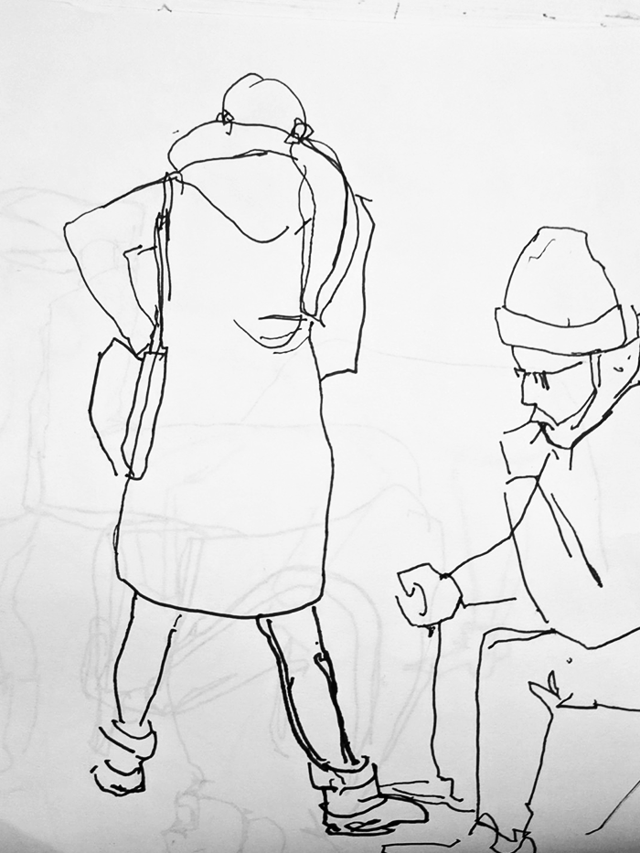
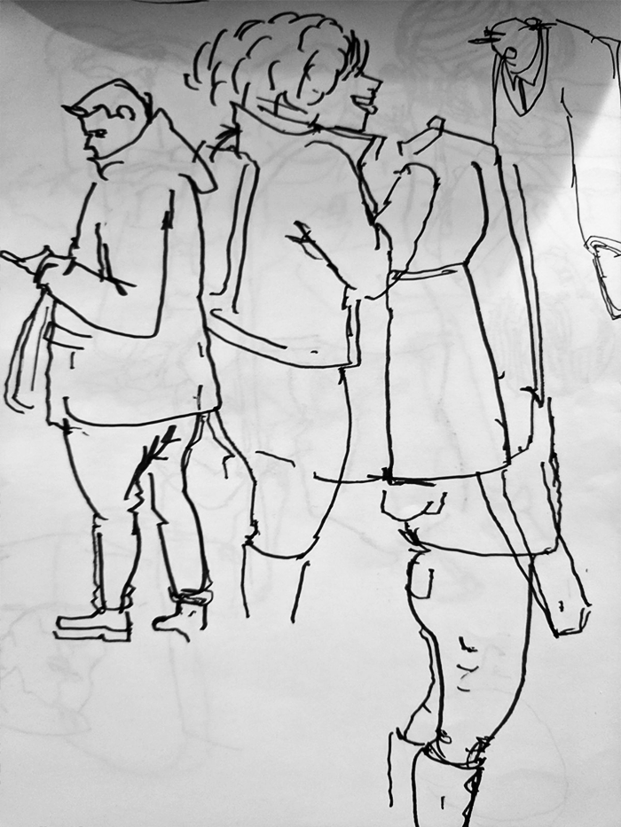

Subway Sketches | 01/13/20
A long commute means a lot of drawing. Let's see how long this can last. I can only draw people people sleeping or looking at their phones for so long.
I've been drawing people on public transportation for over a decade, and after putting it down for awhile and now coming back to it, I've noticed some things are a bit different:
A long commute means a lot of drawing. Let's see how long this can last. I can only draw people people sleeping or looking at their phones for so long.
I've been drawing people on public transportation for over a decade, and after putting it down for awhile and now coming back to it, I've noticed some things are a bit different:
-I feel like people have become more paranoid when they notice they are being drawn.
Maybe I'm the paranoid one, but I swear as soon as people notice me they get up and leave. I wonder if they are suspicious of my intentions. Maybe they are afraid of being displayed and discussed on a strange website. Well, I guess this blog proves them exactly right.
Maybe I'm the paranoid one, but I swear as soon as people notice me they get up and leave. I wonder if they are suspicious of my intentions. Maybe they are afraid of being displayed and discussed on a strange website. Well, I guess this blog proves them exactly right.
-I miss drawing newspapers
It was always fun to draw the edge of the pages folding over the gripping fingers and the corners drooping down like a willow tree. Another art now made obsolete.

It was always fun to draw the edge of the pages folding over the gripping fingers and the corners drooping down like a willow tree. Another art now made obsolete.

-I used to get a lot more drawings of people looking longingly out the window and daydreaming.
Or maybe that's just a false memory, and I'm just trying to convince myself that people were better before smart phones. Do we still call them smart phones? One day soon, the phrase "smart phone," is going to be a sign of age.

Or maybe that's just a false memory, and I'm just trying to convince myself that people were better before smart phones. Do we still call them smart phones? One day soon, the phrase "smart phone," is going to be a sign of age.
Alright, enough "phone: bad" talk.